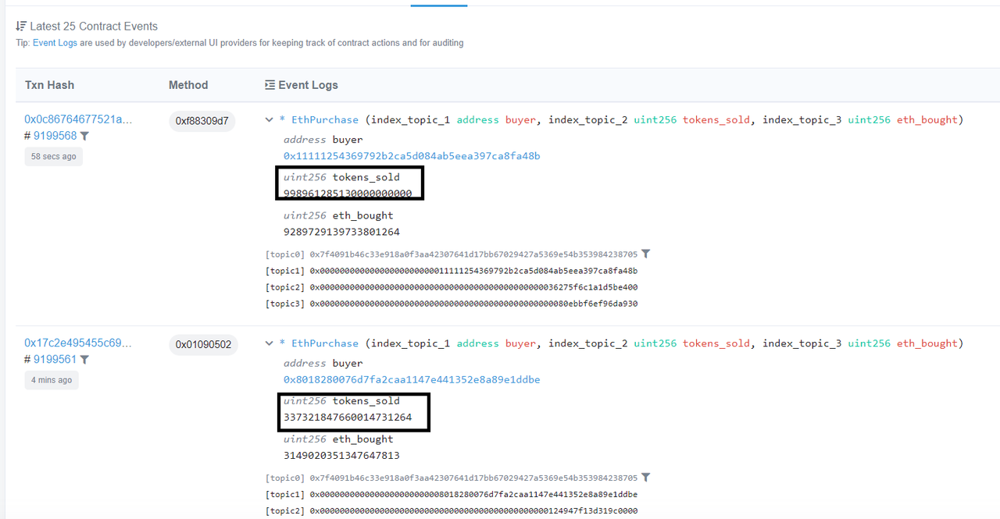

How to trace history of ethereum state varaibles?
One of the much appraised features of blockchain among other things is traceability of data stored on the blockchain priced on records being immutable i think.
I am trying to find out how state changes can be traced practically on the ethereum blockchain. To explain my question, take the following smart contract as example
contract SimpleStorage { uint storedData; function set(uint x) public { storedData = x; } function get() public view returns (uint) { return storedData; } }
In this contract the focus is on the storedData state variable. Lets assume
that the value has changed severally at countless times overtime. So how can
one trace out the history of this storedData to see all the values that has
been assigned to it at different points in time. I am looking for a practical
way this is done.
Answer
You have two ways to potentially track how a state variable has changed over time:
1) The contract has been developed so that when said variable is modified its previous state is added to an array which contains all previous states. ex. check this contract events: https://etherscan.io/address/0x3958b4ec427f8fa24eb60f42821760e88d485f7f#events

2) the contract has been developed so when the state variable is modified it fires an Event that logs said transaction. Take a look to this post in consensys about events:
https://media.consensys.net/technical-introduction-to-events-and-logs-in- ethereum-a074d65dd61e
The article presents three use cases for events:
" First, using an event to simply get a return value from a contract function invoked with sendTransaction(). Second, using an event as an asynchronous trigger with data, that can notify an observer such as a UI. Third, using an event to write logs in the blockchain as a cheaper form of storage. "